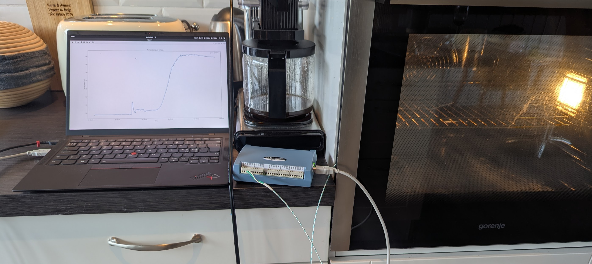
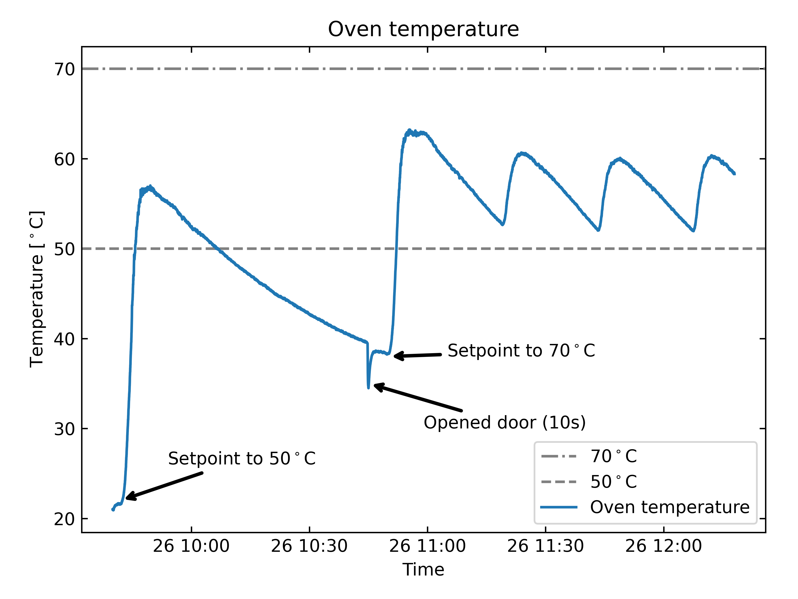
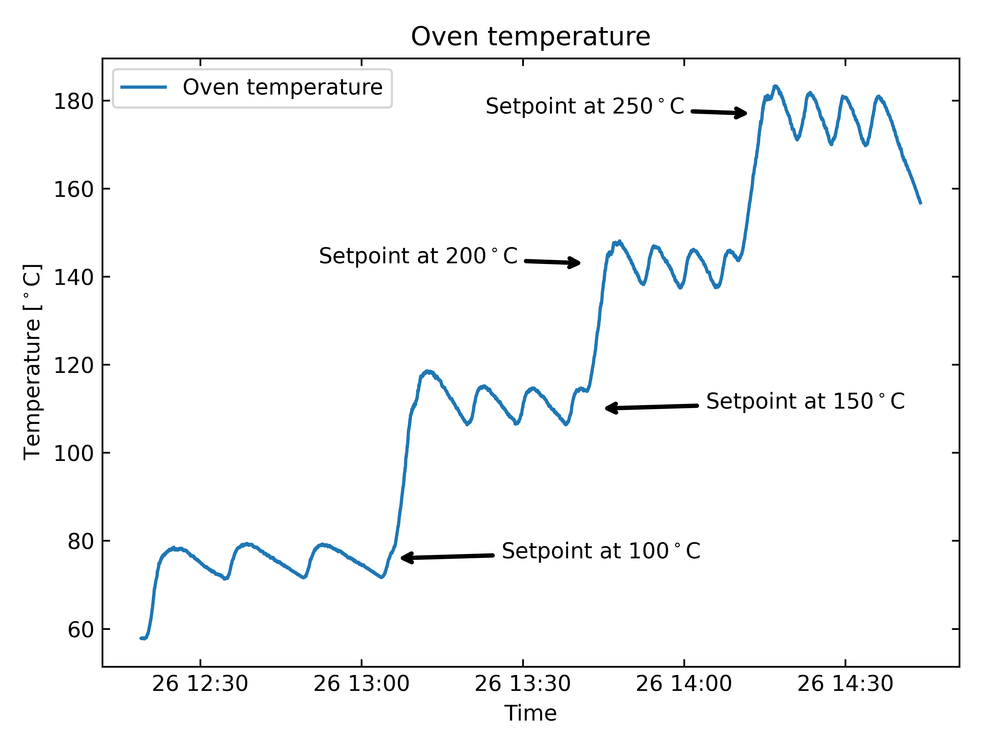
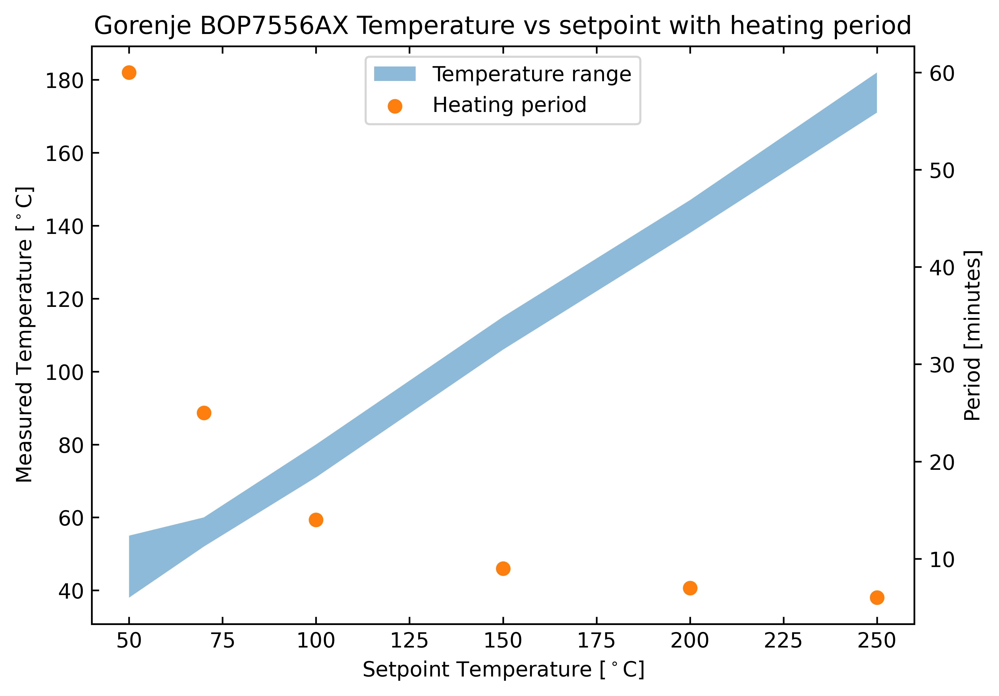
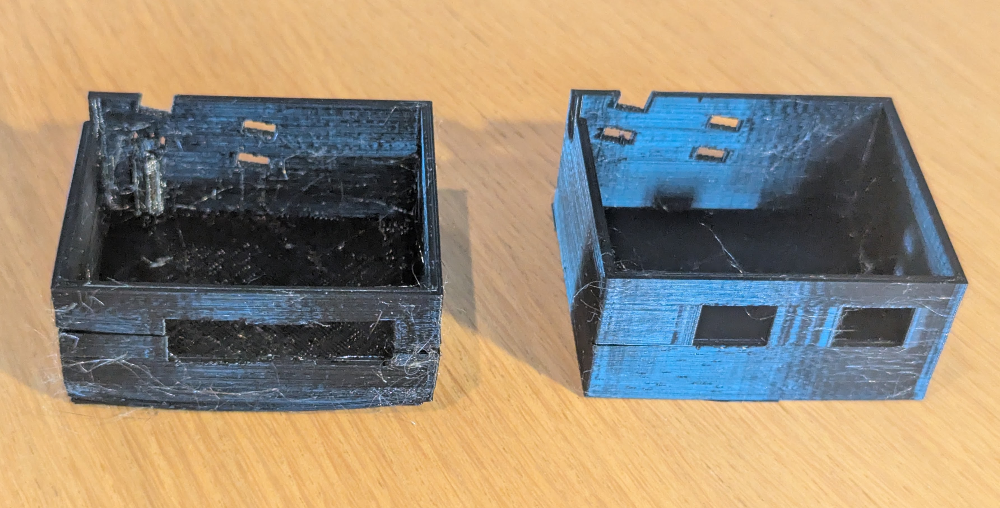

The story about how I got to this point is long, so here is a short version: I'm refurbishing the basement, and who doesn't need to 3D print something when doing that? In this specific case, I needed a safe-box for the fragile fiber internet cables that fit the connectors, and had fastening holes for the incoming fiber.
After designing and starting the first print, I quickly saw that I had massive stringing issues with the PETG filament I was using. A quick Google search pointed to moist filament. This surprised me: it had been stored in the same way for almost 6 months, and I printed a fine just 1 month ago. Still, I decided to dry my filament - but how?
Many people have had good results drying filament in a kitchen oven. The risk is that many ovens are often poorly temperature regulated, which can melt the filamet, or make it take ages to dry. Conveniently, I had just wrapped up some temperature-sensing at work and had brought home a nice thermocouple device. Perfect for testing my oven!
The Digilent MCC USB-TC was the device I had at hand to measure temperature. It's a simple and reliable device (though a bit pricy at around $450). Digilent maintains Python libraries for interacting with the device, both on Windows(mcculw) and on Linux(uldaq). During work, I had only used it on Windows; so I had to update my code to now also support Linux. After the temperature was successfully logged to CSV, I was ready to test my oven.
I brought my laptop and the USB-TC with a thermocouple connected up to the kitchen where I placed the sensor in the middle of my oven (gorenje BOP7556AX). I set it to "over- and under-heat" mode with a setpoint of 50℃. To my surprise, the oven heated up very fast (5 min) and only overshot by 5℃! But I celebrated too early. The temperature decayed after this, and an hour later, the temperature was still in steady decline reaching as low as 39℃. I tried opening the door for 10 seconds, to see if it would react to that, but no.
The next step was to increase the temperature. I only needed a very rough temperature window to dry the filament anyways. This time, I set the oven to 70℃. Again, it quickly got up to temperature, but this time it undershot by 7℃. In the following 15 minutes, it declined all the way to 53℃. Luckily, at this setpoint the oven started heating again, wohoo! It was triggering the heating elements with a resulting temperature swing between 52-60℃ and a period of approximately 25 minutes. Check the temperature plot below for a visual.
Although a temperature within 52-60℃ when set at 70℃ is not ideal. I think it'll do the job.
This was fun, though! And maybe my wife would appreciate knowing the actual temperature at different setpoints?
I increased the setpoint to 100℃, 150℃, 200℃ and 250℃. Check the image and table below for details.

| Setpoint (℃) | Low (℃) | High (℃) | Period (minutes) |
|---|---|---|---|
| 50 | 38 (still declining) | 55 | >60 |
| 70 | 52 | 60 | 25 |
| 100 | 71 | 80 | 14 |
| 150 | 106 | 115 | 9 |
| 200 | 138 | 147 | 7 |
| 250 | 171 | 182 | 6 |
And I wouldn't be a data scientist if I didn't visualize it: 
Wow, what a detour with checking oven temperatures! Let's get back to the task at hand. I set the setpoint back down to 70℃, opened the door and waited until the temperature was down to ~60℃ again before i chucked the roll of PETG in the oven. After drying for 5 hours, I took it out and started the print.
It didn't start smoothly, and I had to relevel the bed to make the first layer good. I might have yanked the printed when removing or inserting the filament - not good. Anyways, the result look miles better! There is still some furryness with the dried filament, but the print is functional, so that will have to wait for another day.
That's all!